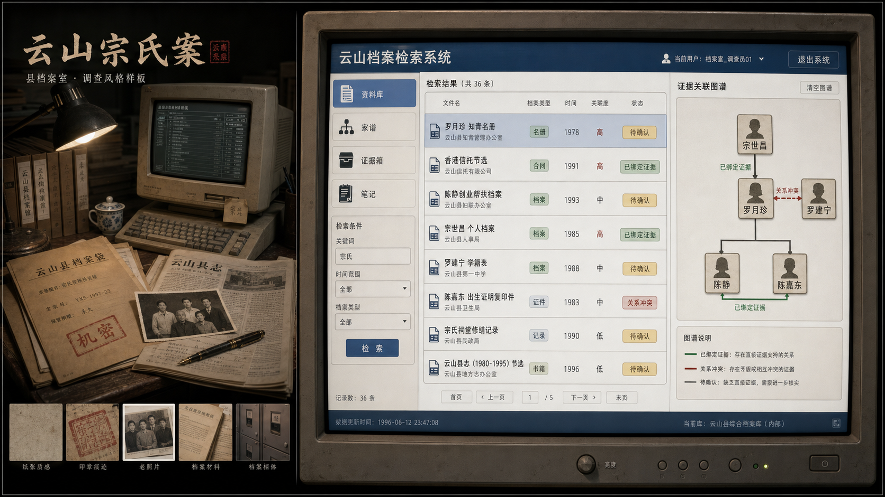

选择一份资料开始调查
资料来源可信度不同。档案、户籍、信托、DNA 报告通常比论坛八卦更可靠。
内部资料终端

资料来源可信度不同。档案、户籍、信托、DNA 报告通常比论坛八卦更可靠。
为每条关系选择正确人物，并绑定你已经收藏的证据。提交时只检查关键关系，旁支可在后续版本扩展。
收藏过的资料会出现在这里。关键关系需要绑定强证据，而不是只凭八卦。
这些是 Demo 占位语音，用于验证声音节奏。正式版可替换为真人或高质量 TTS。
这里会自动保存。建议记录你认为可靠的证据链，而不是只摘录八卦。
关键词来自已阅读资料，可点击回到资料库继续搜索。
请提交你对“第七支血脉”的判断。系统会检查关键关系、证据绑定和继承资格。